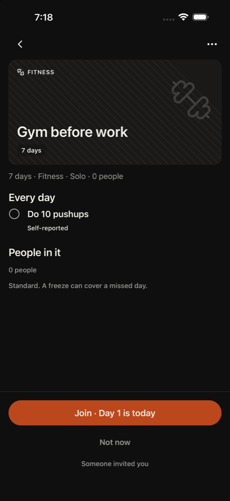
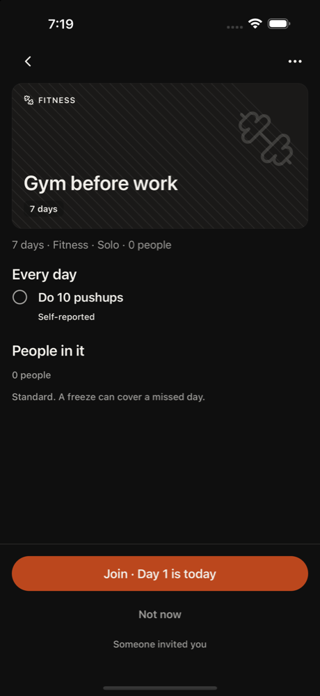
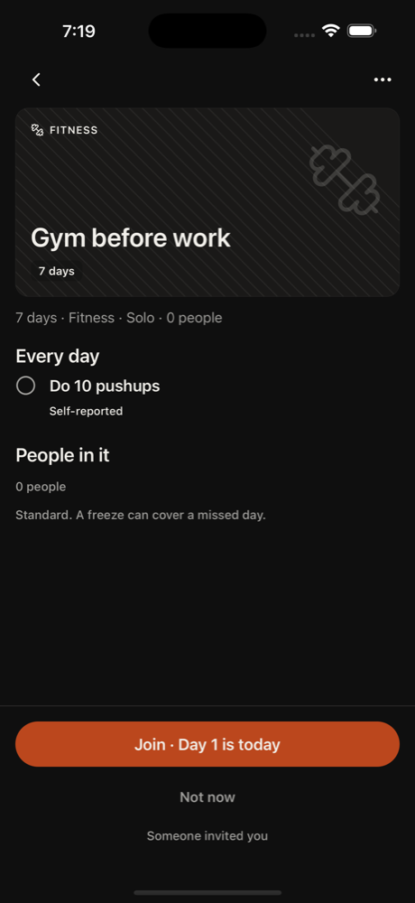

1. other tap Join · Day 1 is today
Kim invited me, so I'll join the challenge.
neutral · 5902ms
Friends with Kim. Got Kim's invite link.
Kim asked them to join. Tech med, patience 3, phone small, text default, curious, English native.
Funnel stage: opened. Stages: opened. Steps 11. 100s. is_test true. Stopped: 3 stuck notes on Gym before work invite.
GRIIT iPhone 16. Persona phone size was recorded and not applied, because this is the simulator that has the app installed. Text size applied: large. Cleanup: kept
1. other tap Join · Day 1 is today
Kim invited me, so I'll join the challenge.
neutral · 5902ms

2. other tap Join · Day 1 is today
The screen still shows the Join button, so my earlier tap may not have registered. I'll tap it again to join Kim's challenge.
Confusion: It says 'Solo · 0 people', which is odd for a challenge Kim invited me to.
neutral · 6278ms

3. other scroll 50%,60%
Join tapped twice and nothing changed. I'll scroll to see if anything updates or a different part of the screen shows a result, then try something else.
Confusion: Join button doesn't seem to do anything; still shows 0 people
frustrated · 6540ms
4. other tap Join · Day 1 is today
Still on the invite screen after scrolling. I'll try tapping Join once more and wait to see if it registers. If it doesn't, I'll try going back.
Confusion: Join doesn't seem to do anything, still shows the Join button
frustrated · 5722ms

5. other wait
Join has been tapped three times and the screen hasn't changed. A '0%' element showed up, which could mean it's loading. I'll wait a moment before tapping again. I'd probably give up soon if this were real, but I'll keep exploring.
Confusion: Tapped Join several times and nothing changes. Is it loading or broken?
frustrated · 6319ms

6. other back Go back
Join has been tapped several times and nothing changed. The test says to try something different, so I'll go back and see whether I joined or can reach the challenge from elsewhere.
Confusion: Join doesn't seem to do anything. The screen is the same and shows 'Someone invited you'.
frustrated · 6608ms

7. other tap Join · Day 1 is today
Back didn't take me anywhere, so I'm still on the invite. I'll tap Join again to try to join Kim's challenge.
Confusion: Join does nothing and the challenge says Solo with 0 people, not Kim's
frustrated · 5975ms

8. other tap Join · Day 1 is today
Still on the invite screen after several Join taps. I'll try Join once more in case it's finally processing, since the goal is to join Kim's challenge.
Confusion: Join does nothing; the screen never changes and shows 0 people.
frustrated · 6343ms

9. other tap Not now
Join has done nothing after many taps and the test says to try something different. I'll tap Not now to leave the invite and look for the challenge from Home or the feed.
Confusion: Join · Day 1 is today does nothing and there's no feedback
frustrated · 8207ms

10. other tap Not now
Still on the invite screen after tapping Not now before. Nothing seems to change. I'll try Not now again to leave and find the challenge from Home. I would have quit by now, but I still owe actions.
Confusion: Join and Not now both do nothing, and the screen never changes.
frustrated · 7042ms

11. other scroll 50%,60%
stuck: Join and Not now both do nothing. Trying a scroll instead of tapping them again, in case there's more on the page or the screen is just slow. I'd have quit already, but I still owe actions.
Confusion: Join and Not now don't respond; "0%" showing but no progress
frustrated · 6541ms